Tak, a je definitivně po všem. Složila jsem slib, převzala diplom a potřásla proděkanovou rukou (toho času v ortéze :D). Musím přiznat, že na to, jak jsem se celé té velké maškarády s názvem “promoce” obávala, byl to jeden z nejhezčích zážitků na půdě naší školy a na následnou afterparty myslím budeme všichni ještě dlouho vzpomínat :D…
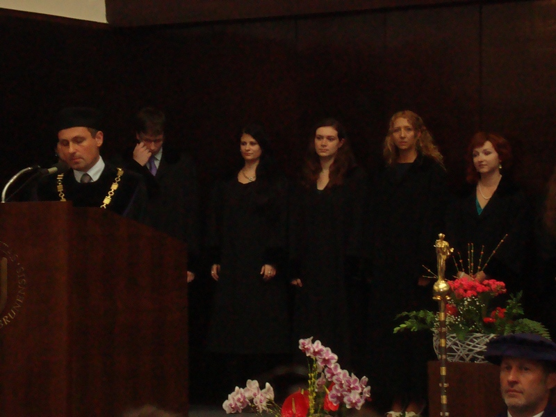
Projev docenta Kotáska
Atmosféra byla hodně uvolněná, všichni se na nás usmívali a dokonce i naše studijní referentka, se kterou jsem se chytla po státnicích kvůli přelepce na ISIC, se nám omluvila, pokud na nás někdy byla na studijním nepříjemná - málem mi slza ukápla :D! Při instrukcích mi trochu ztuhnul úsměv na rtu, když jsem se dozvěděla, že nebudeme dělat jen jedno kolečko jako na VUT, ale dokonce TŘI. Utěšovalo mě jen to, že nestojím na začátku ani na konci a nemusím číst studentský projev :D…

Poté, co jsme s referentkou probrali scénář promoce, strhla se bitka o taláry :D. Podařilo se mi hbitě ukořistit jednu z mála velikostí M. Nakonec jsem byla ráda, že ty taláry máme, protože jsem zjistila, že sympatická slečna po mé levici má úplně stejné šaty jako já, hrozné faux pass :D!
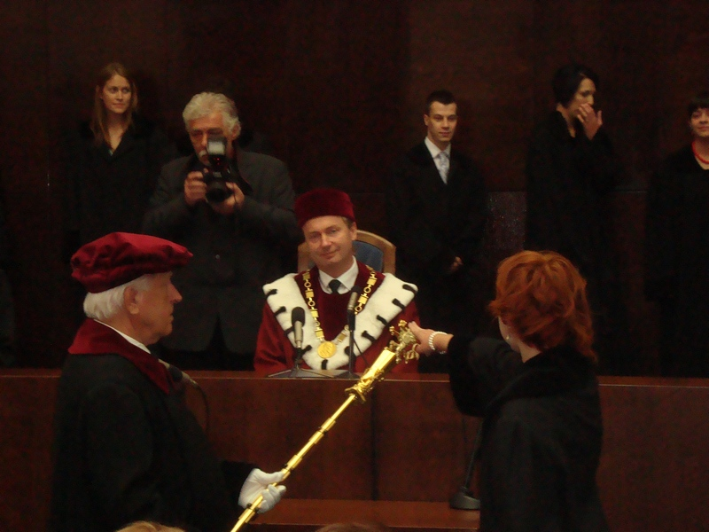
“Zavazuji se a slibuji…”
Obřad sám o sobě byl hezký a utekl tak rychle, že jsem si ho skoro ani nestihla užít. Milé bylo, že mezi akademickými hodnostáři zasedali dva, na které budu ráda vzpomínat. Docent Kotásek mě podržel na zkoušce z obchodního práva a jen díky výjimce proděkana Mrkývky mě pustili ke státnicím v řádném termínu. Po úvodních fanfárách a hymně měl projev docent Kotásek a šlo se první “ukláněcí” kolečko :D. Ve druhém kolečku jsme skládali slib a v posledním třetím jsme si konečně z rukou proděkana Mrkývky převzali diplomy. Na závěr ještě zazněl studentský projev a samozřejmě Gaudeamus Igitur - a já si hned vzpomněla na Básníky :DDD…
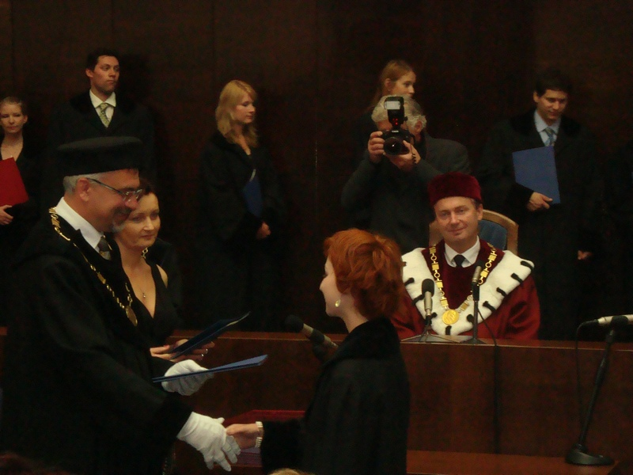
“Pan proděkan má ruku v ortéze, tak mu s ní při gratulaci prosimvás moc netřepte!” :D
Po promoci nás ještě fotograf nahnal na schody na společné absolventské foto a pak už jsem skončila v obležení rodiny, květin a všeobecného zmatku :D…
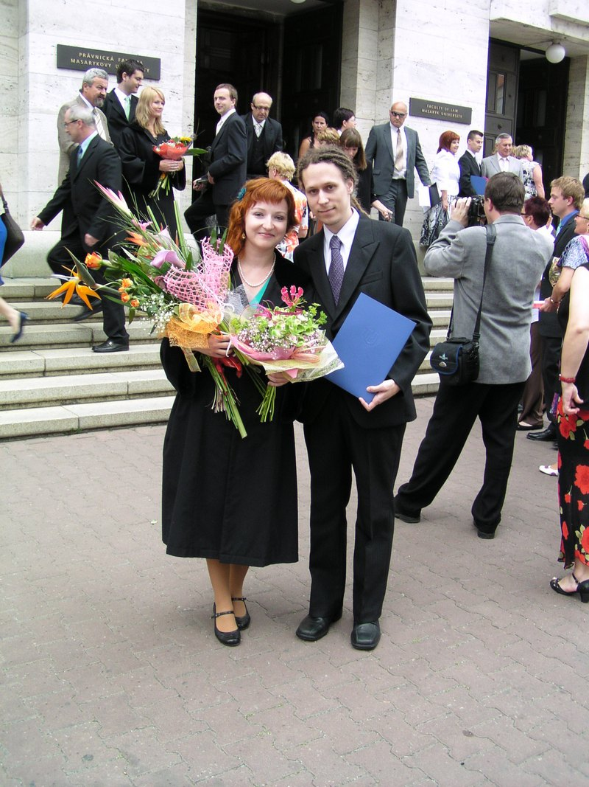
S Péťou :)
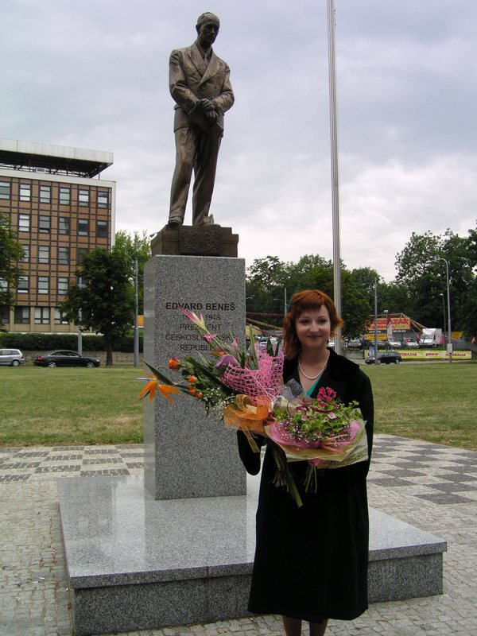
S Edvardem Benešem :)
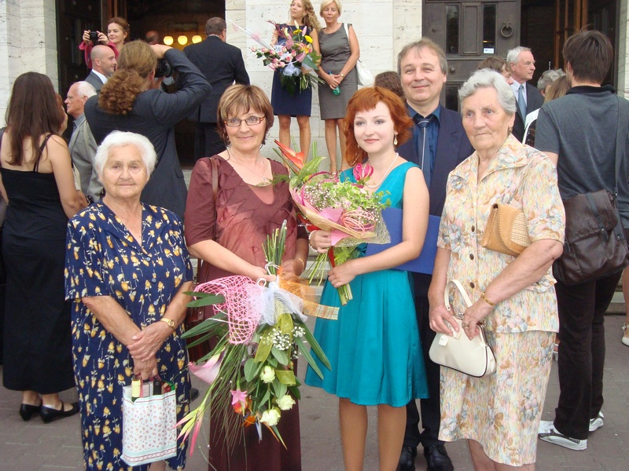
S hrdou rodinou :D
Rezervačku jsme měli u Černého Orla, takže po povinném focení s Benešem a s fakultou jsme se museli všichni naskládat do čtyř aut a vyrazit napřed na byt (zapít tu slávu :D) a poté do KM. U Orla to bylo báječný, ale i přes otevřená okna tam bylo příšerné horko, takže jsme se brzy po jídle přesunuli na “afterpárty” k tetě na zahradu, kde jsme setrvali ve stínu jabloně až do večera.
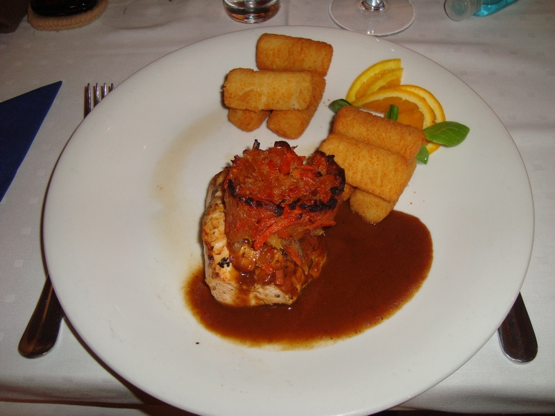
Mňamka u Orla
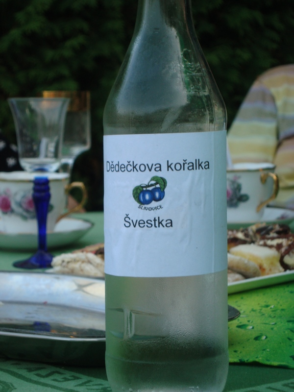
U tetičky :D
Kdyby nic jinýho… za tuhle báječnou oslavu, kterou mi rodina připravila, těch pět let na výšce prostě stálo :D!
No a na závěr trochu té květeny, než to v tom tropickém hicu všecko zvadne :D…
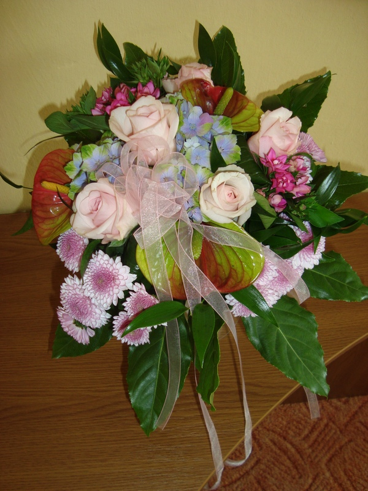
Od tatínkovy kolegyně
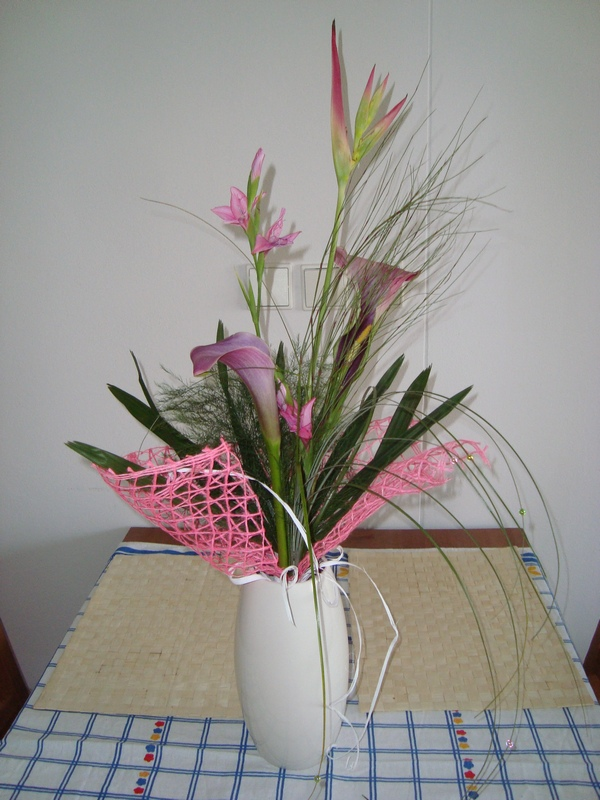
Od muže
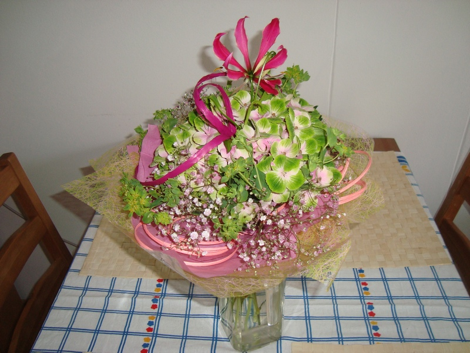
Od babičky
Komentáře (1)
Komentáře jsou uzavřené.